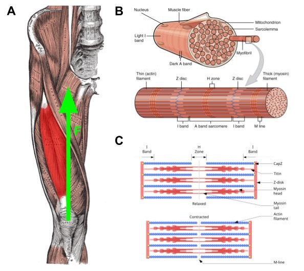
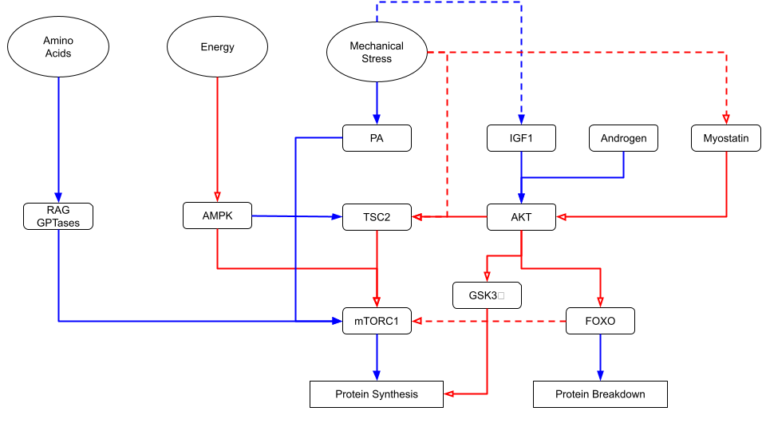
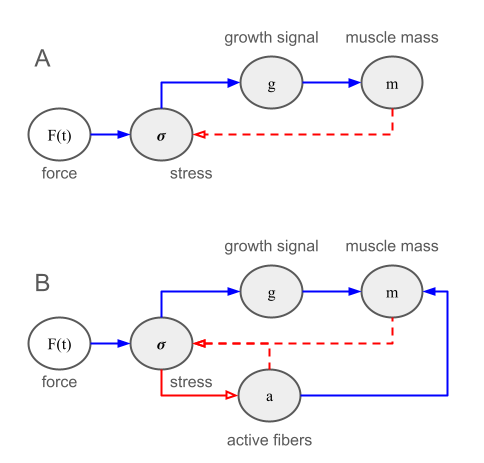

Introduction
Skeletal muscle is the contractile tissue responsible for generating the forces that produce movement. Skeletal muscle also adapts to increasing demands for force production by building new contractile units within muscle cells, causing the cells to grow larger via a process known as hypertrophy. However, muscle tissue also adapts to this stimulus such that repeated application of the same stimulus does not drive additional growth in muscle tissue. Continuing to grow muscle requires progressive overload in which the muscle is subjected to increasing stress over time. In this post, I examine the mechanism driving the adaptation of muscle tissue to mechanical stress by developing a minimal mathematical model of stress induced hypertrophy that highlights connections to robust adaptation in other biological systems.
Organization of Muscle Fibers
Skeletal muscle is a post-mitotic tissue consisting of long, cylindrical cells called muscle fibers or myofibers. Each muscle fiber is a multinucleate cell that spans the length of the muscle, connecting via tendons to bones on each end (Figure 1A). Note that a myofiber is not a protein filament, but rather a whole cell that is typically micrometers in diameter and centimeters in length, in contrast to a myofibril, which is a component within muscle cells. Muscle fibers are typically aligned nearly parallel to the axis of force generation; however, in general the angle between the muscle fiber and the axis of force generation is called the pennation angle. Some muscles – such as the rectus femoris highlighted in Figure 1A – consist of fibers with different pennation angles (called bipennate or multipennate tissues) whereas others are unipennate and have fibers that run parallel to each other. For simplicity, I will develop the theory for unipennate, parallel muscle fibers with the understanding that it can be readily generalized to other fiber orientations (e.g., by including a \(\cos(\theta)\) term where necessary).

Figure 1. Schematic of muscle structure, from muscle tissue (A) to muscle fibers (B) down to individual sarcomeres (C). Muscle hypertrophy generally involves an increase in the number and size of myofibrils within each muscle fiber, primarily through net protein accretion and addition of new myofibrils as fibers grow. Embedded figures are from Wikipedia (Rectus femoris, Organization of Muscle Fiber, Sarcomere).
{kind=link}
{kind=link}
{kind=link}
Muscle tissue is organized hierarchically. Muscle fibers (which are themselves grouped into fascicles) span the length of the tissue. Myofibrils are cylindrical structures within muscle fibers that span the length of the cell and are responsible for doing the actual mechanical work (Figure 1B). Myofibrils are subsequently made up of repeating units called sarcomeres, which correspond to the individual contractile units (Figure 1C).
Each sarcomere – typically 2–3 μm long at rest – consists of overlapping thick filaments (made of myosin) and thin filaments (made of actin), along with the elastic protein titin that acts as a molecular spring. Titin also connects the thick filaments to the structural boundary of the sarcomere, a protein lattice called the Z-disk primarily composed of α-actinin that transmits force to neighboring sarcomeres. During contraction, myosin heads repeatedly bind to actin, pull the thin filaments inward, and release, shortening the sarcomere as the filaments slide past one another (this myosin powerstroke is driven by ATP binding and hydrolysis).
Muscle fibers are innervated in groups called motor units, with each motor unit consisting of a single motor neuron controlling multiple fibers. The fibers within a motor unit contract completely, or not at all, when stimulated. Thus, an individual motor unit only contracts if the stimulus exceeds a given threshold. Force output is graded by recruiting additional motor units, or by increasing the firing rate of already-active motor neurons. In addition, motor units are recruited sequentially, starting with fatigue-resistant slow twitch fibers first, with high-force producing fast-twitch fibers brought in as the demand for additional force production increases.
Muscle tissue generally adapts to exercise or other stimuli in three ways. First, the cells may produce metabolic adaptations, such as additional mitochondria, in response to increased energy demands. Second, the motor neurons may adapt to repeated training, for example by increasing firing rates or synchronizing activity across motor units. Third, muscle cells may grow larger (i.e., hypertrophy) by producing additional contractile proteins.
Hypertrophy
Inside each muscle fiber are many myofibrils — cylindrical structures, roughly 1–2 μm in diameter, that run the length of the fiber and do the actual mechanical work.
Hypertrophy — the increase in muscle size with training — occurs primarily through growth of existing fibers rather than an increase in fiber number. The cellular mechanism is net accumulation of myofibrillar protein: synthesis must exceed degradation over time. Mechanically loaded muscle activates a signaling cascade centered on the kinase mTORC1, which upregulates ribosomal activity and drives protein synthesis. As myofibrils accumulate protein they grow radially, and once they reach a sufficient size they split longitudinally, producing new myofibrils. So fiber growth is essentially an increase in the number of myofibrils packed into the fiber cross-section. Sarcomeres can also be added in series at the tips of myofibrils, increasing fiber length, though this is less dominant in the context of resistance training. Finally, because a myonucleus can only support a limited cytoplasmic volume, sustained hypertrophy is thought to require the incorporation of new nuclei, donated by satellite cells — resident stem cells that proliferate and fuse with the fiber in response to mechanical loading and local damage.

_Figure 2. Caption …
Existing Models of Hypertrophy
Theory

_Figure 3. Caption …
Hill Functions
We will be using the Hill function, so it is helpful to define some notation up front. The Hill function \[ \phi_n(x; K) = \frac{x^n}{K^n + x^n} \] is an example of a saturating function, where \(K\) sets the scale at which \(x\) starts to saturate and \(n\) sets the steepness with which \(\phi\) switches from near \(0\) to near \(1\) as \(x\) crosses \(K\). For the sake of simplicity, we will take \(n=1\) for all of the Hill functions in the model presented below but the results are easily generalizable.
Mechanical Stress
Muscle growth responds to mechanical stress, which is defined as the applied force per unit area. That is, \(\sigma = F / A_{\perp}\) where \(A_{\perp}\) is the cross-sectional area of the muscle perpendicular to the force. We want to express the stress in terms of the mass of the muscle fiber, \(m\). To do this, we note that if the force is applied in the direction of the muscle fiber, then \[ A_{\perp} = \frac{V}{L} = \frac{m}{\rho L} \] where \(V\) is the volume, \(L\) is the length, \(m\) is the mass, and \(\rho\) is the density of the muscle fiber . Thus, if the external force at time \(t\) is \(F(t)\) then the associated stress is \[ \sigma(t) = \frac{F(t) \rho L}{m(t)} \, . \] Note that one can come up with alternative scalings of \(\sigma\) with \(m\) under different assumptions, but in one generally has \(\sigma \sim m^{-\alpha}\) with \(\alpha \in [2/3, 1]\) so the results are fairly robust. Likewise, one can account for the angle of the force relative to the muscle fibers in more complex cases, but we’ll stick with the simplest case here.
Growth Signaling
Growth signaling in skeletal muscle inolves the activation of the mTORC1 complex as well as other pathways. We abstract this concept into a single variable \(g\) representing a scalar hypertrophy signal. The dynamics of the growth signal are governed by the ordinary differential equation \[ \tau_g \frac{d g}{d t} = \Gamma \, \phi_n(\sigma) - g \] where \[ \phi_n(\sigma) = \frac{\sigma^n}{K_{\sigma}^n + \sigma^n} \] is a Hill function that captures the response of the growth signal to applied mechanical stress and \(\tau_g\) controls the timescale of the dynamics. Thus, \(K_{\sigma}\) represents a mechanical stress threshold, with \(n\) controlling the steepness of the response curve. The dimensionless quantity \(\Gamma \in [0,1]\) represents the availability of amino acids and energy for muscle growth. For example, if the quantity of amino acids is \(A\) and the available energy is \(E\) then one could have \[ \Gamma_{n,n'}(A, E) = \frac{A^n}{K_A^n + A^n} \frac{E^{n'}}{K_E^{n'} + E^{n'}} \] but, for simplicity, we will simply assume that \(\Gamma\) is a constant.
Muscle Damage
Mechanical stress can cause damage to sarcomeres, preventing them from translating mechanical stress into downstream growth signals. If \(a \in [0,1]\) represents the fraction of active (i.e., non-damaged) sarcomeres in a muscle fiber, then we describe the dynamics of \(a\) as \[ \frac{d a}{d t} = -\eta \sigma a + \mu (1-a) \] where \(\eta\) describes the coupling between mechanical stress and muscle damage and \(\mu\) is the rate of damage repair.
Muscle Hypertrophy
Muscle mass grows in response to mechanical stress according to the differential equation \[ \frac{d m}{d t} = \lambda \, a \, \psi_{n''}(g) - \delta m \] where \[ \psi_{n''}(g) = \frac{g^{n''}}{K_g^{n''} + g^{n''}} \] is another Hill type function. For the sake of simplicity, we will set all of the Hill coefficients to \(1\), but leave them in the definitions for completeness.
Complete Model
The complete model is defined by the following set of three ordinary differntial equations \[ \begin{align} \tau_g \frac{d g}{d t} &= \Gamma \, \frac{\sigma}{K_{\sigma} + \sigma} - g \, , \\ \frac{d a}{d t} &= -\eta \sigma a + \mu (1-a) \, , \\ \frac{d m}{d t} &= \lambda \, a \, \frac{g}{K_g + g} - \delta m \, \, \end{align} \] where \[ \sigma(t) = \frac{F(t) \rho L}{m(t)} \, , \] is the applied mechanical stress.
Dimensions and Parameter Values
Separation of Timescales
Note that the dynamics of the growth signal (determined by \(\tau_g\)) are much faster than those of muscle damage/repair or growth. As a result, we can set \(\tau_g \frac{d g}{d t} = 0\) and assume that the growth signal is well captured by the equilbrium value \[ g^* = \Gamma \, \frac{\sigma}{K_{\sigma} + \sigma} = \Gamma \, \frac{F(t) \rho L}{m(t) \, K_{\sigma} + F(t) \rho } \] Therefore, with the equilibrium assumption for the growth signal we arrive at a simplified set of two ordinary differential equations \[ \begin{align} \frac{d a}{d t} &= -\eta \sigma a + \mu (1-a) \, , \\ \frac{d m}{d t} &= \lambda \, a \, \frac{g^*}{K_g + g^*} - \delta m \, . \end{align} \]